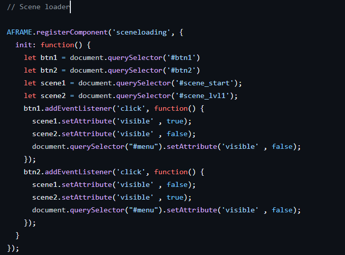
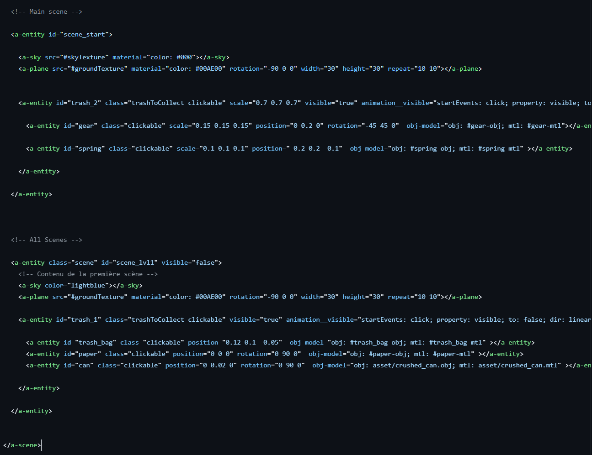
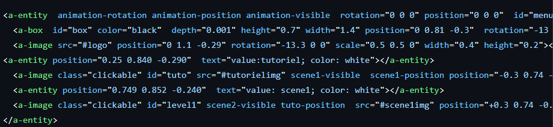
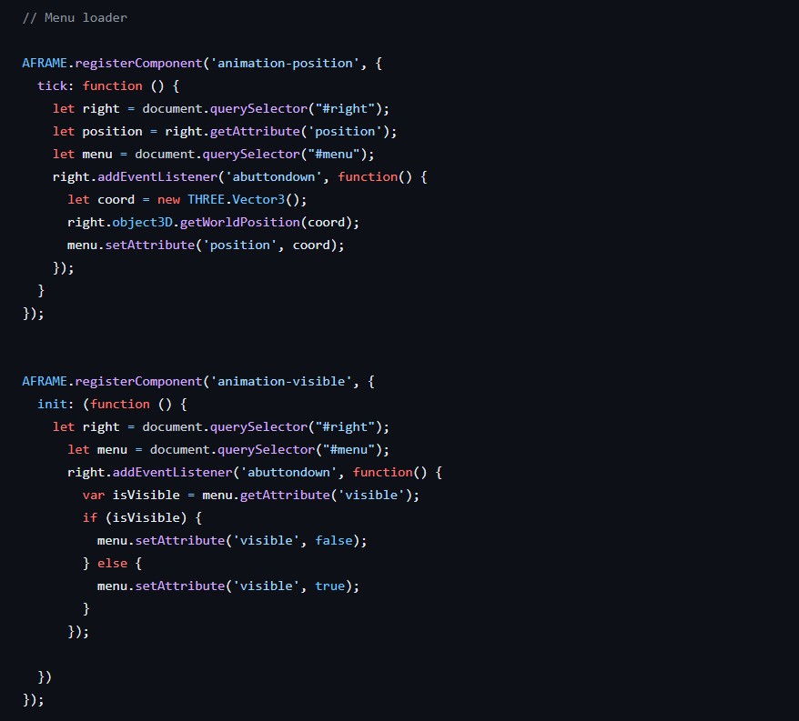
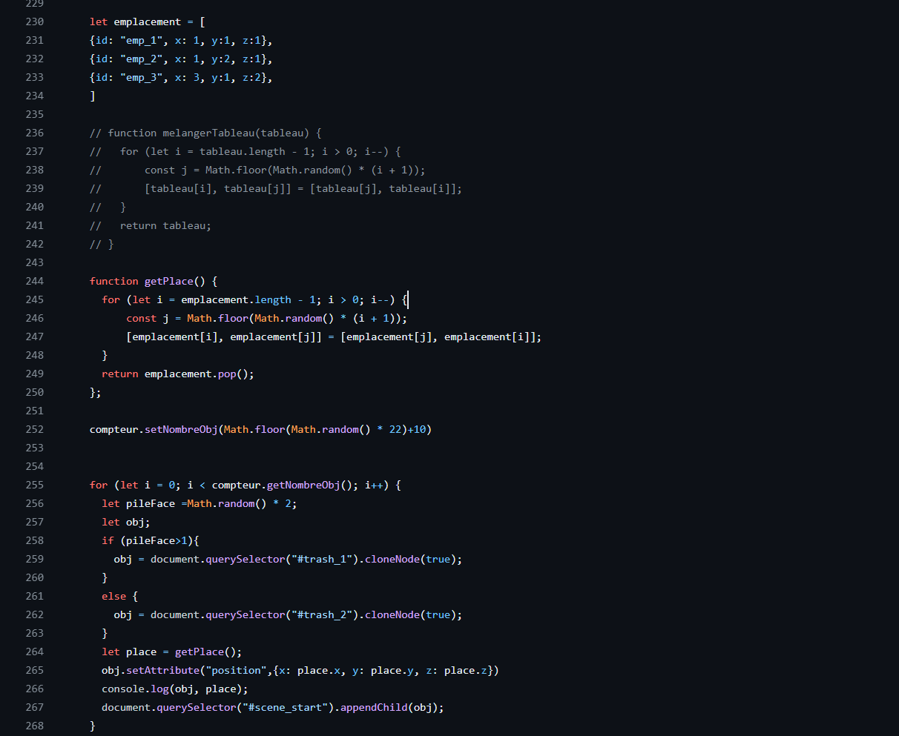
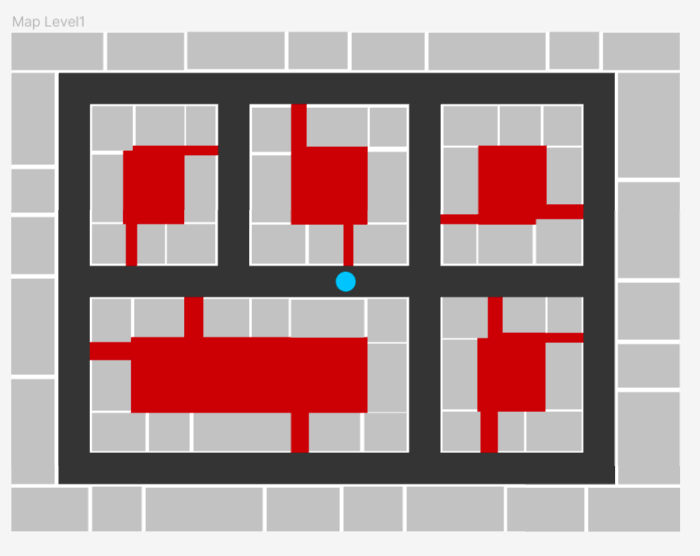
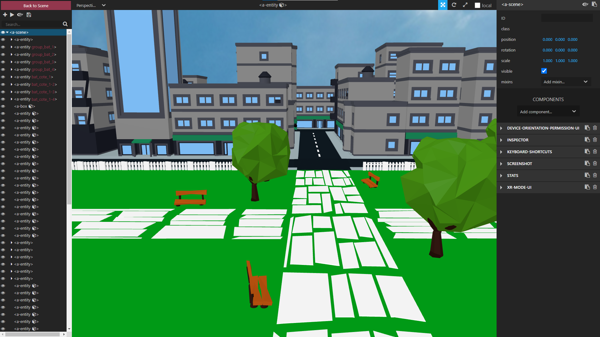

HellCleaner est un jeu aux allures rafraîchissantes, mais qui cache un sombre secret ! Un individu mystérieux a semé le trouble et la saleté dans ShinyCity. C’est la panique pour les habitants qui ont déserté la ville, maintenant surnommée DirtyCity.
Votre mission est de nettoyer la ville de son impureté. HellCleaner est un jeu d’exploration dont le but est de collecter l’entièreté de la saleté présente dans DirtCity.
Le thème de notre jeu est la pollution des villes par les déchets.
Le concept du jeu est de se déplacer dans une ville parsemée de plusieurs « objets » (de la saleté, comme des canettes de soda, du plastique, ou encore des papiers journaux) avec lesquels on peut interagir pour les ramasser.
Fonctionnement
Jouer à HellCleaner VR est assez simple. On se déplace en se téléportant avec le joystick de la manette. On ramasse des objets, ou tout simplement on interagit avec l'environnement avec la gâchette de la manette. Une fois le tutoriel suivi, on arrive dans le 1er niveau (1/1), une grande ville. HellCleaner est codé avec a-frame, un framework.
Scene Loader


Pour les niveaux, notre logique est de charger/décharger une scène, en jouant sur son attribut "visible". Ce ne sont pas des "scène" a proprement parlé, mais des entités avec un identifiant (comme "scene_tuto", "scene_lvl1") car dans a-frame, on ne peut avoir qu'une seule balise a-scene.
Menu


Pour permuter entre ces différents niveaux, nous avons créé un menu qui s'ouvre en fonction de la position de la manette. Ce menu est une a-entity qui contient une a-box pour donner une texture visuelle, mais également qui contient des images cliquables. Ces images fonctionnent avec des registerComponent pour la visibilité et la position du menu, et ont un addEventListener qui s'occupe de charger/décharger une scène.
Emplacements

Pour les objets à ramasser, c'est une a-entity qui contient différents modèle trouvés sur le net. Ils sont positionnés sur la map de manière dynamique et aléatoire. L'idée derrière et d'avoir une liste d'emplacement possible (un tableau d'objets contenant des coordonnées), de définir un nombre aléatoire d'objets (un Math.random avec un maximum de 32 car c'est le nombre maximum d'emplacements), et avec une boucle for i, assigner un objet, parmi les quelques preset d'objets qu'on a créés, à un emplacement aléatoire.
Level Design


Pour le tutoriel, l'objectif est de guider le joueur avec un chemin de terre, ainsi qu'avec des explications tout du long.
Pour le niveau 1, nous avons décidé d'une carte simple d'un centre ville avec un grand nombre de batiment, avec un schéma en 2d.
La "construction" des différentes scènes s'est faite à l'aide de fichier OBJ, qui ont étaient placés à l'aide de l'interface de développement d'a-frame (ctrl+alt+i).